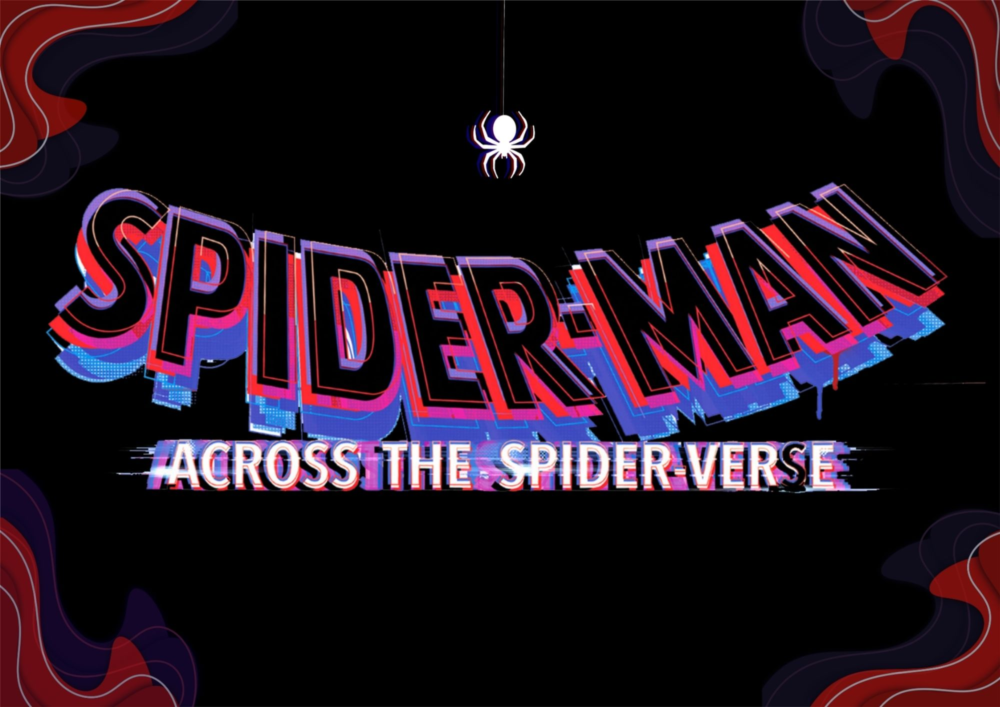
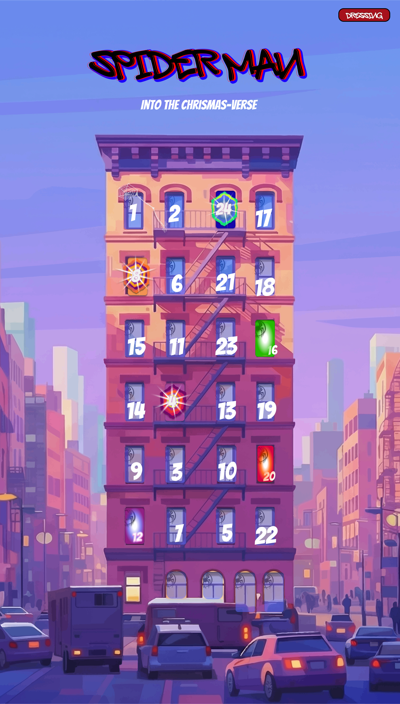
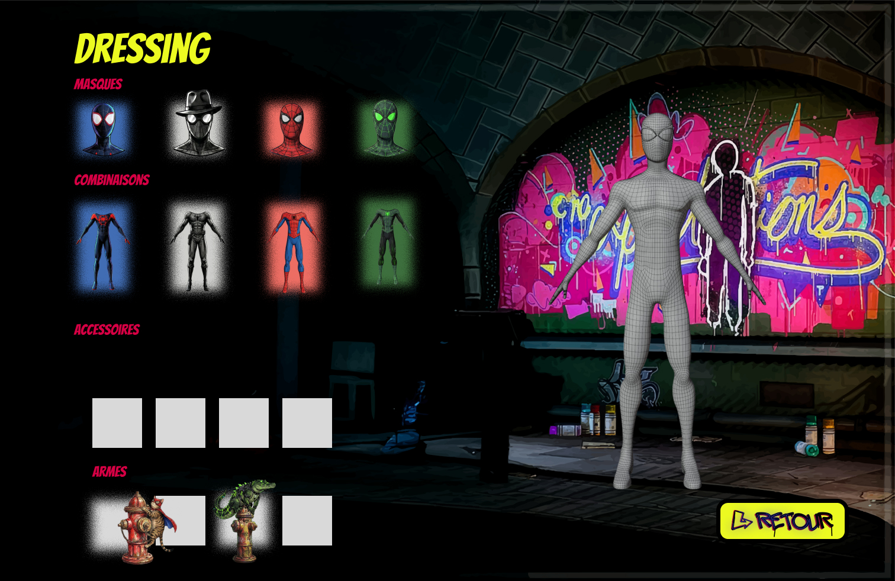
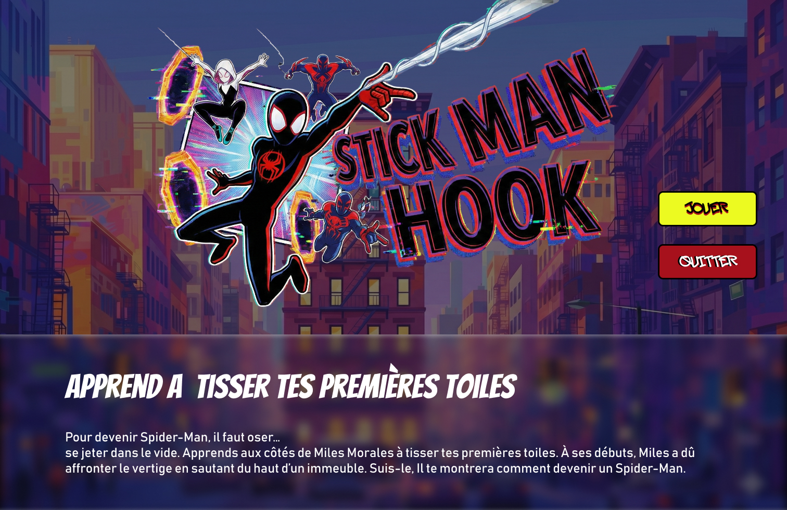
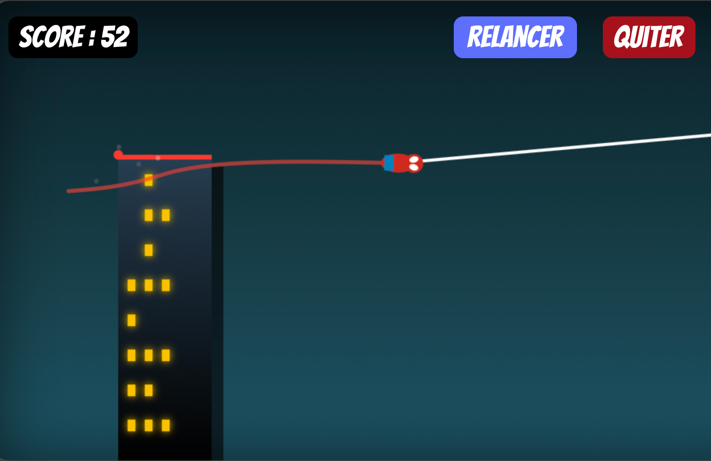

Workshop Spiderman
Calendrier de l'Avent interactif · BUT MMI · IUT de Lannion
- 2025
- Test utilisateur
- Scénographie
- Design
- UX/UI
- Marketing
- Wireframing
- Maquettage
- Figma
- Canva
- InDesign
- Notion
Contexte & objectifs
Réalisé dans le cadre d'un Workshop de Noël, ce projet s'inspire du film d'animation américain « Spider-Man : Across the Spider-Verse ». L'objectif est de proposer une expérience digitale sous la forme d'un calendrier de l'Avent interactif, où Margo Kess (Spider-Byte) lance un appel pour recruter une nouvelle armée de Spider-Hologrammes afin de protéger le multivers.

Objectif de résultat
L'enjeu est de concevoir un parcours utilisateur immersif et engageant pour une cible de jeunes adultes et adolescents (16-26 ans) fans de la franchise. L'expérience se veut positive, évitant les dark patterns, en intégrant des mécaniques de jeu (mini-jeux, personnalisation, scénarisation) pour fidéliser l'utilisateur pendant 24 jours. La direction artistique reprend l'esthétique urbaine, glitch et pop-art caractéristique du film.

Travail réalisé
Le projet a abouti à la conceptualisation d'une application mêlant ouverture de cases quotidiennes et un système de « Dressing » pour créer son propre Spider-Man. Il comprend des prototypes d'interfaces (accueil, mini-jeux, personnalisation), une charte graphique détaillée (logos, typographies, palettes de couleurs), ainsi qu'une réflexion sur l'expérience utilisateur (UX) validée par des tests (POC). Enfin, une stratégie de communication (kakémonos, vidéos) a été pensée pour promouvoir le lancement de l'application.


Compétences mobilisées
- UX / UI Design
- Wireframing & Maquettage
- Tests utilisateurs (POC)
- Direction artistique
- Identité de marque
- Stratégie de communication